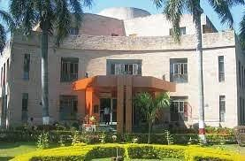
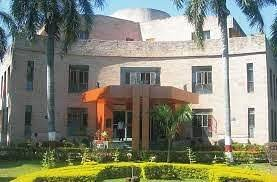
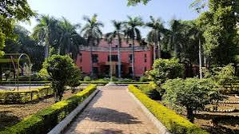
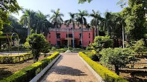
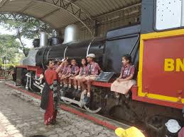
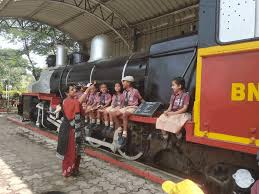

The Raman Science Centre and Planetarium Complex is an interactive science centre that hosts science exhibitions and fosters scientific attitudes and the expansion of science and technology in many industries and people’s livelihoods. It is a popular tourist destination in Nagpur, attracting visitors from all over the world. It is named after the Nobel Prize-winning physician- Chandrasekhar Venkata Raman. It’s a place where kids can play, and grown-ups can learn something new while brushing up their scientific expertise. Every day, four planetarium shows and four 3-D shows are held here. There is a prehistoric animal park where light and sound shows are held three days a week (Wednesday, Friday, and Sunday) after sunset. There is a Telecommunications and Information gallery that takes you on a journey through the evolution of ICT, starting with cave paintings and ending with the modern world of the internet. In addition, there is a gallery that takes you on tour through the history of scientific inventions, from quinine to mobile phones. A fun scientific display is also available, including exhibits such as a virtual book, floor piano, plasma globe, and more. The centre now has three interactive galleries, including a 133-seat planetarium, an ancient animal park, and various other activities. In addition, it gives out the Green Finger Award in partnership with the local NGO Hirwai to raise awareness among school-aged children.


 

 


 
